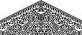
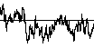
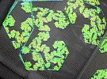

| We continue our study of examples
of cellular automata patterns. |
 |
Genetic Algorithms and Artificial Evolution
A message from biology to computer science. Applying the biological paradigms of
crossover and mutation to evolve smart programs from a population of dumb programs.
|
| | 1/f Noise
Scalings in CA, evolution, and elsewhere. This scaling, that the size of events
falls off as roughly the reciprocal of the frequency of the events, is present in a
wide variety of settings, yet the source of this behavior remains unclear. We
present some examples, including 1/f scaling in music. |
 |
| Videofeedback is
the result of a simple process of feeding the output of a videocamera to the input
of a monitor in teh field of view of the camera. We can think of this as an analog
version of 2-dim CA, and, it turns out, also as an analog version of the deterministic IFS
algorithm. |
 |